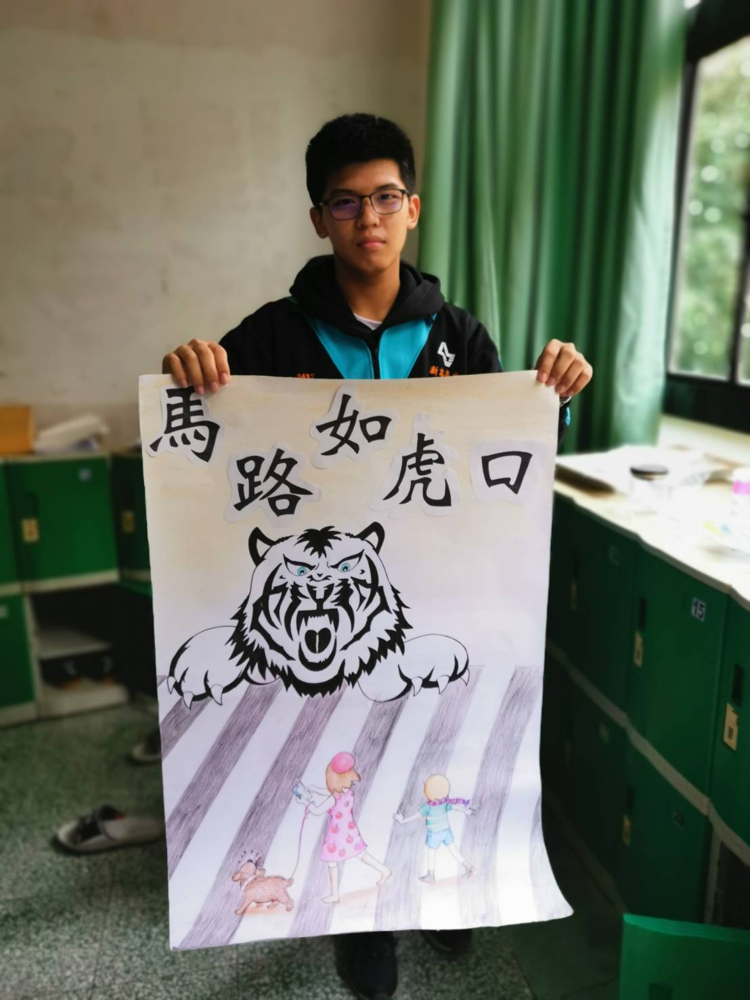
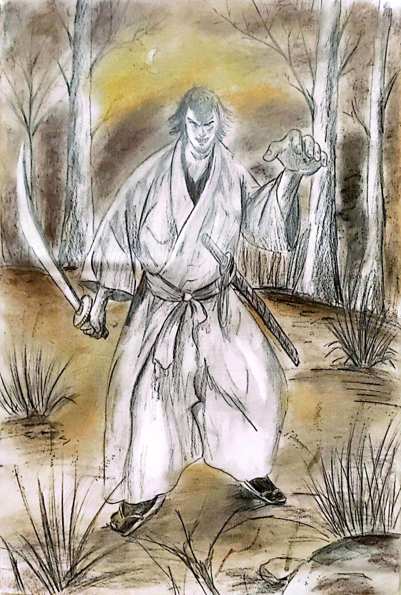

邱 宇同
我來自一個溫暖的家庭，因為父親工作的因素，我從小就接觸程式設計以及英文，並且也產生了濃厚的興趣。高一的時候，也透過母親身為藝術史講師所擁有的人脈接觸了繪畫，藉由專業的老師指導，我從基礎的素描進步到能模仿出井上雄彥老師以及其他畫家精緻的漫畫作品。 同時，也因為自己對語言的興趣，擔任了學校第18屆的外文社社長。
我來自一個溫暖的家庭，因為父親工作的因素，我從小就接觸程式設計以及英文，並且也產生了濃厚的興趣。高一的時候，也透過母親身為藝術史講師所擁有的人脈接觸了繪畫，藉由專業的老師指導，我從基礎的素描進步到能模仿出井上雄彥老師以及其他畫家精緻的漫畫作品。 同時，也因為自己對語言的興趣，擔任了學校第18屆的外文社社長。
因為畫了手部的素描，開始對畫人產生興趣，於是老師建議我嘗試漫畫，第一次嘗試就十分喜歡畫漫畫，也學會了許多工具的使用方法，像是炭筆，墨筆等繪畫工具。我大部份的作品都是模仿井上雄顏老師的浪人劍客中的作品。
漫畫製作這份作品我和同伴花了很多心思設計，最後以馬路如虎口作為主題，正好當時學會使用墨筆的方式，所以決定使用黑白漫畫的方師呈現老虎，並用色鉛筆畫出行人。
因位剛接觸漫畫，所以我決定參加美術比賽的漫畫組。我認為這個作品最困難的部分是畫背景，因為平常的作品都沒有背景，而且在這幅畫，背景佔了很多述說故事的功用，所以我認為很有挑戰性。但還是順利得到校內第五名。
